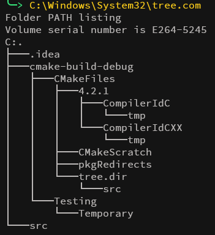
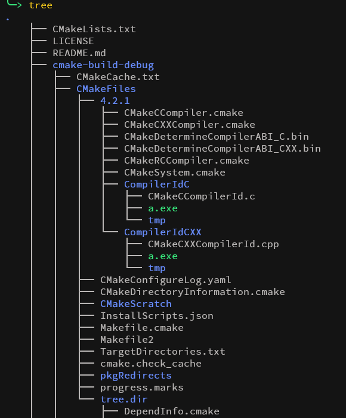

If you're anything like me, you only use Windows for the few programs that don't have good Linux alternatives. One of the things I hate most about it is the built-in tree command. It's slow, it's ugly, and it barely does anything.
The Windows version has, quite literally, three flags and two options: tree [<drive>:][<path>] [/f] [/a]. /f adds file names, /a swaps the line drawing for plain text characters, and /? prints help. That's all of it.
The tree on Linux is faster, looks better, and has dozens of flags for shaping the output, down to color-coding by file type and size. So I wrote my own tree for Windows. It's also just called tree, and you can install it with Scoop:
scoop bucket add tree https://github.com/jeebuscrossaint/tree
scoop update
scoop install tree
Flags
It matches the Linux version flag for flag, except for the HTML output options. I didn't see a need for those on Windows, and I doubt many people use them on Linux either. tree --help lists them all:
- What to list:
-a hidden files too, -d directories only, -P and -I to include or exclude a wildcard pattern, -L max depth, --filelimit to skip directories with too many entries, -l to follow symlinks to directories, -x to stay on one file system.
- What to show for each entry:
-f full path, -p type and permissions, -s size in bytes or -h human-readable, -u owner, -g group, -D last modified, --inodes, --device, and -F for file-type indicators.
- Order:
-v by version, -t by modification time, -r reversed, --dirsfirst.
- Drawing:
-i no indentation lines, -A ANSI or -S ASCII line graphics, -n and -C to force color off or on, -q or -N to print non-printable characters as ? or as they are, --noreport to skip the summary.
- And
--help and --version.
Side by side
The same directory, the built-in command on the left and mine on the right:


Mine is cut off after the first 34 lines; the full listing runs to 14 directories and 57 files.
Mine draws a clearer hierarchy, colors directories, files and file types so they're easy to tell apart, and adds sizes, permissions, owners and dates when you ask for them. The built-in command works, technically. This one is the tree you already know from Linux.